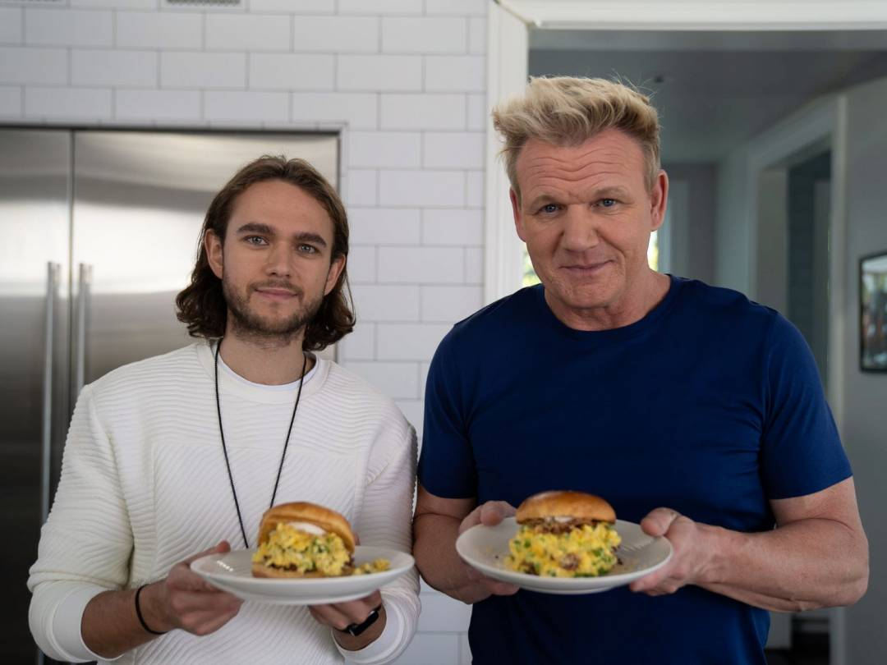

Breakfast Sandwich

How to make it!
This breakfast sandwich is loaded with eggs, ham and cheese and is hugged by a warm English muffin that toasts in the same pan. Serve as is or with hot sauce if you like a fiery breakfast!
Ingredients
- 1 english muffin, cut in half
- 2 eggs
- 2-4 slices of ham, we love black forest but any kind will do
- 1/3 cup finely shredded cheese, we used Mexican cheese
- 1 tsp chives, finely chopped
- Salt and Pepper to taste
- 1 Tbsp olive oil or butter to saute
Steps
- Heat a large non-stick pan over medium heat and drizzle with 1 Tbsp oil.
- Place your Engish muffin on half of the pan cut-side down. Crack 2 eggs side by side on the other half of the pan and break the yolks with a spatula.
- Once eggs are mostly cooked through, sprinkle tops with salt and pepper to taste, 1 tsp fresh chives and half of shredded cheese. Place toasted english muffins cut-side-down over the eggs and lightly press on the tops with a spatula.
- Flip the sandwich over (egg-side-up). Place ham over half of your sandwich and top with more cheese. Fold the sandwich together and and remove from heat.